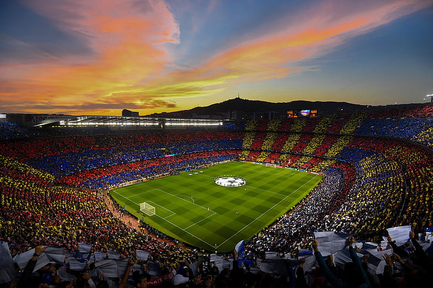

About FC Barcelona
FC Barcelona, founded in 1899, is more than just a football club; it represents a strong cultural and social identity in Catalonia and beyond. Known for its motto "Més que un club" (More than a club), Barça has a rich tradition of success and innovation in football.
The club is recognized worldwide for its unique style of play, known as "tiki-taka," which emphasizes short passing and maintaining possession.
History
With over a century of history, FC Barcelona has become one of the most successful football clubs globally, winning numerous domestic and international titles. The club's legacy includes iconic players like Johan Cruyff, who revolutionized the game, and Lionel Messi, who became the face of modern football.
Barça's historical achievements include multiple La Liga titles, UEFA Champions League victories, and a long-standing rivalry with Real Madrid, known as "El Clásico."
Current Team
The current FC Barcelona squad features a mix of experienced veterans and rising stars. Under the guidance of their coach, the team continues to compete at the highest levels, aiming to add more trophies to the club's illustrious cabinet.
Key players include talented youngsters who are shaping the future of the club, alongside seasoned professionals who provide leadership and experience on the pitch.

Camp Nou Stadium
Camp Nou, the iconic home of FC Barcelona, is the largest stadium in Europe, with a seating capacity of nearly 100,000. The stadium has witnessed countless memorable moments in football history and is a must-visit for fans around the world.
The atmosphere at Camp Nou on match days is electrifying, with passionate supporters creating an unforgettable experience for players and visitors alike.
